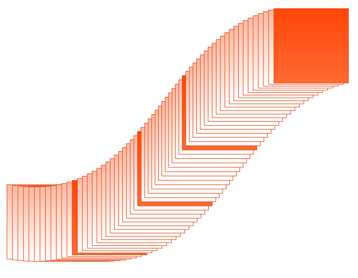
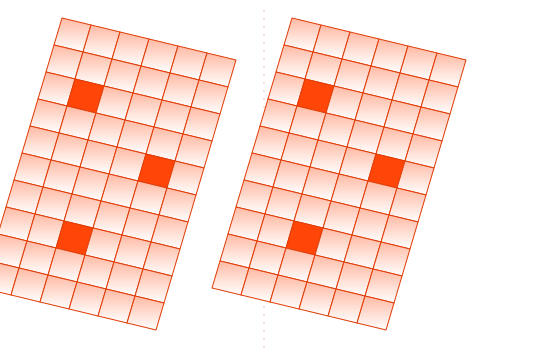
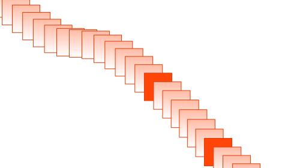
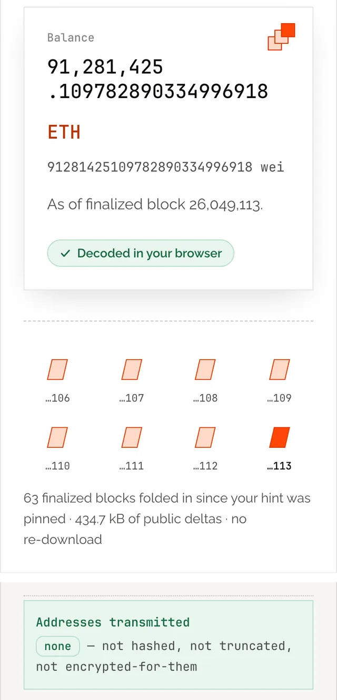
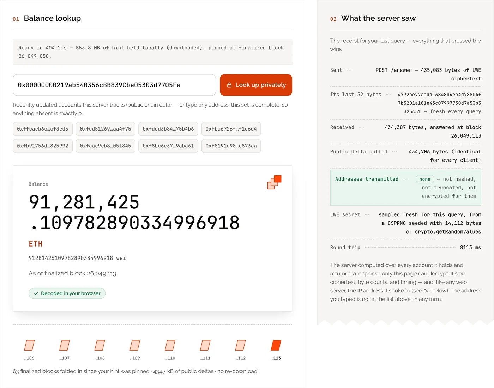
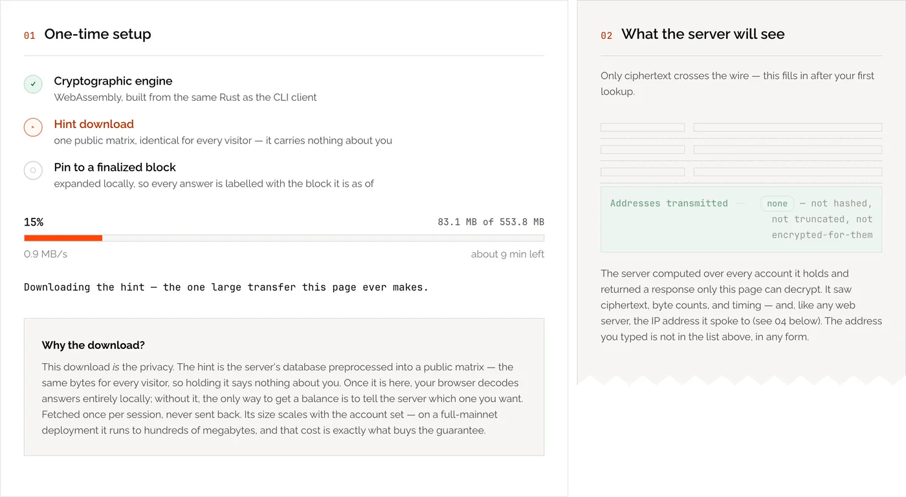

The chain is public. Only your question needs hiding.
RisePIR looks up any Ethereum balance without the server learning which address you asked about — across all 204,714,034 funded accounts, kept current block by block.
Research prototype · the live instance runs during demos and on request.

Measured on the live deployment, 2026-09-03.
Ethereum changes every 12 seconds. RisePIR keeps up by patching, not rebuilding.
Fast private lookups need a preprocessed hint of the whole database. In earlier keyword PIR, changing one account meant rebuilding it. RisePIR's Segmented Cuckoo Filter turns each change into a sparse, position-predictable patch — so a block's changes land in milliseconds.
“A scheme that rebuilds on every change cannot keep pace with the chain.” — RisePIR paper, §9
Encrypted here. Computed blind. Decoded here.
Download the hint, once
Your browser fetches a 553.8 MB preprocessed hint. It is identical for every visitor, so holding it says nothing about you.
Ask in ciphertext
The address is encrypted in your browser into a ≈435 kB LWE query. The server computes over every one of its 204.7 million accounts, so it cannot tell which one you meant.
Stay current, block by block
Each finalized block's changes arrive as a ≈10.8 kB public delta that every client downloads in full, so your answer is corrected to the latest finalized block without re-downloading the hint.
Your browser
Builds the LWE query locally.
PIR server
Computes over the entire database · sees ciphertext only.
Ethereum mainnet
Followed at finalized, ≈13 min behind the head.
One component changed. Everything else stays fast.

d-ary Segmented Cuckoo Filter
Each address maps to exactly one bucket per segment, so every segment is a self-contained PIR database — and an insert, update or delete touches only a few predictable cells.
Never a wrong answer
An error is acceptable. A silently wrong balance is not. Every failure path refuses rather than guesses.
The address never leaves your browser
The client is WebAssembly running on your machine. The address is not hashed, not truncated, not encrypted for the server — it is not sent.
Finalized, never reorged
Answers are as of the latest finalized block, about 13 minutes behind the head, so an answer cannot be quietly invalidated.
Checked against the chain
300 of 300 live answers matched an independent provider byte for byte (2026-09-03).
Two variants, one construction
RisePIR-S over SimplePIR runs this deployment; RisePIR-F runs over FrodoPIR.
Read the paper →
The live deployment, in numbers
One binary, one host, one 3.1-hour window on 2026-09-03: 300 private queries and 959 blocks.
Measured on 2026-09-03 on a GCP c3d-highmem-16 (AMD EPYC 9B14, Zen 4, 16 threads); client an AWS r7a.xlarge over the public internet. Source: docs/deployment-numbers.md in the repository.
Look up a real balance. Watch what leaves your browser.
Type any address.
The hint downloads once.
A receipt shows exactly what crossed the wire.
The live instance is not always on — it runs during demos and on request.



What this does not protect
The guarantee is specific: the operator cannot learn which account you asked about. Everything it does not cover is stated here, up front — not in fine print.
Who is choosing your client
demo.risepir.org serves both the page and the WebAssembly, so PIR holds only if that origin is honest.
- Same-origin delivery plus a
connect-src 'self'CSP constrain a tampered page, not a dishonest origin. - The wasm's only host import is a random-bytes source.
- The wasm and CLI share source — run
risepir-rpc client --pir-url …yourself to remove the question.
What the cryptography does not hide
It hides which account, not that, when, how often or from where you asked; the server sees your IP address and timing like any web server — use Tor if that matters.
Freshness
Answers are as of the latest finalized block, about 13 minutes behind a block explorer — deliberately, because finalized blocks do not reorganise.
This page is not the PIR origin
risepir.org is static, carries no cryptographic client, and makes no PIR queries — it sits outside the trust boundary above. It is hosted on Cloudflare Pages, so Cloudflare terminates TLS for it and injects its own analytics script (cloudflareinsights.com) at the edge — not in this page's source, and not something it asks for. demo.risepir.org is served directly, with no proxy in the path that delivers the cryptographic client.
Read the paper. Run the code.
Incremental Keyword Private Information Retrieval from d-ary Segmented Cuckoo Filters
“…the first preprocessing keyword private information retrieval (PIR) scheme that absorbs insert, update, and delete on its key-value store at a cost proportional to the number of mutations alone.”
Accepted for publication; DOI and PDF on release.
github.com/orochi-network/private-eth-getbalance
Rust workspace: PIR server and verified store, WebAssembly and CLI clients, mainnet feed, JSON-RPC front end, conformance harness.